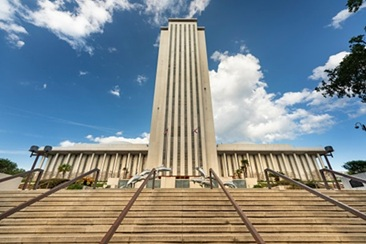

Tallahassee as Florida's Political Center
Tallahassee's selection as Florida's capital was primarily a matter of geography. In the early nineteenth century, travel between Pensacola and St. Augustine could take several weeks, making it impractical to govern from either location. Territorial officials selected Tallahassee because it lay approximately halfway between the two population centers. Since becoming the territorial capital in 1824 and the state capital in 1845, the city has remained the permanent seat of Florida's government.

Today, the Florida Capitol Complex dominates downtown Tallahassee. The modern Capitol building stands alongside the restored Historic Capitol Museum, symbolizing both the state's political history and its modern governmental system. The Governor's Office, the Florida Senate, the Florida House of Representatives, and numerous executive agencies operate within walking distance of one another, allowing policymakers to collaborate closely during legislative sessions. This concentration of government offices distinguishes Tallahassee from nearly every other city in Florida.
Government employment has become one of Tallahassee's primary economic drivers. Thousands of residents work directly for state agencies, while many others are employed by law firms, lobbying organizations, consulting firms, and policy research groups that support the legislative process. Universities such as Florida State University and Florida A&M University further strengthen this environment by educating future lawyers, public administrators, economists, and political scientists who often pursue careers in state government.
Because Tallahassee hosts the annual legislative session, the city experiences seasonal political activity unlike anywhere else in Florida. During the session, legislators introduce hundreds of bills covering education, healthcare, taxation, environmental policy, transportation, criminal justice, and economic development. Citizens, advocacy organizations, and industry representatives regularly travel to the Capitol to testify before committees and meet with elected officials, making Tallahassee the focal point of statewide political participation.